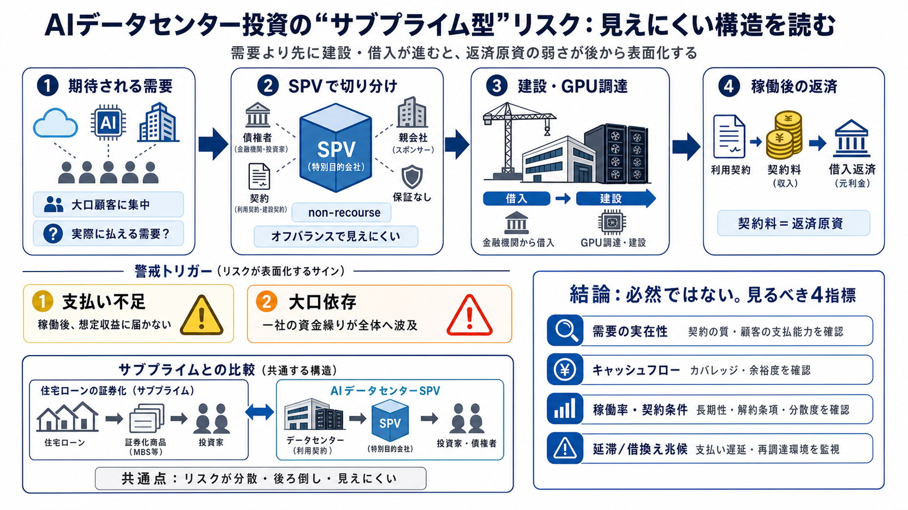

The $800 Billion Bet: How AI Data Centers Are Being Financed, and Where the Risk Actually Sits
[Join now](https://www.linkedin.com/signup/cold-join?session_redirect=%2Fpulse%2F800-billion-bet-how-ai-data-centers-bei…

金融危機を“たとえる”読み方
AIデータセンター投資を「サブプライム（住宅ローン）型の構造」に見立て、SPV・非償還・オフバランスが“見えにくさ”を生む流れを要点だけ追います。
何が不安なのか
投資判断が「実際に払える需要（キャッシュフロー）」より先に「建設・調達」を進めると、後で返済が詰まります。記事の主張は、見えやすい“需要の空気”と、見えにくい“返済原資の弱さ”がずれる点です。
たとえの骨格
サブプライムでは、リスクが複雑な証券化に紛れて見えにくくなりました。記事は同様に、データセンターでもSPV（特別目的会社）で資金を組むことで、誰がどれだけ傷つくかが後ろ倒し・分散されると論じます。
資金の流れ（記事の筋）
SPVが調達した借入でGPU調達や建設費を賄い、債権者はデータセンター収益（契約料）で回収を期待します。ここで“想定どおり払われるか”が核心になります。
“見えにくさ”の要因
会計上・契約上の扱いが複雑だと、市場がリスクの実態を即時に把握しにくくなります。記事は特に、オフバランス（VIE等）と契約条件が“停止時の損失”を見えにくくする点を問題視します。
需要が弱いと何が起きるか
稼働開始後に支払いが想定より弱いと、DSCRや流動性要件の悪化、借換え条件の厳格化を通じて、問題が表面化しえます。記事は“建設完了前は問題が見えにくく、稼働後に一気に来る”流れを示唆します。
“金融商品化”の似方
サブプライムでも、証券化で見えにくくなったリスクが、ある時点で返済不能へ転化しました。記事はAIデータセンターでも、需要の中心が偏る・供給が積み上がる・資金移動が止まると同種の連鎖が起きうると見ます。
トリガーの三段
危機は抽象的に起きるのではなく、工程のどこかで詰まり始めます。記事は主に、稼働後の支払い不足・大口の資金繰り問題・市場の買い手離れ（借換え困難）を挙げます。
“必然”ではない
SPVやnon-recourse自体が即危機の保証ではありません。重要なのは、需要の定義（何が実需要か）、返済原資の実績、そして借換え環境が悪化していないかを、反証可能な形で追うことです。
結論（記事の価値と注意）
AI投資を“金融工学×実需要”の観点で再点検することが本稿の強みです。結論を“必然”扱いせず、需要・稼働率・契約条件・延滞/借換えの兆候で継続モニタリングする姿勢が必要です。
[Join now](https://www.linkedin.com/signup/cold-join?session_redirect=%2Fpulse%2F800-billion-bet-how-ai-data-centers-bei…
# Key Trends in Data Center Financing for 2026. The data center financing landscape is undergoing a fundamental transfor…
Mar 16, 2026 — Investment in AI infrastructure via off-balance sheet debt is increasing the exposure of insurers and pri…
# The $3 Trillion AI Data Center Build-Out Becomes All-Consuming for Debt Markets. That’s the staggering price tag to b…
# Wall Street is starting to worry about AI debt. About 34% of global fund managers now cite AI hyperscaler spending as …